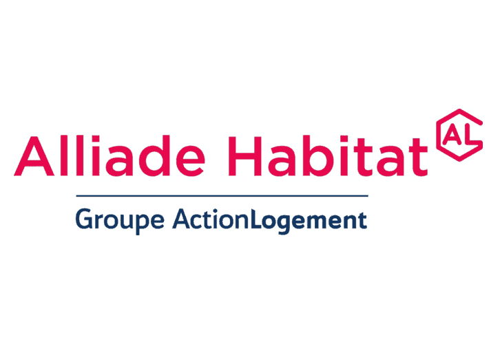
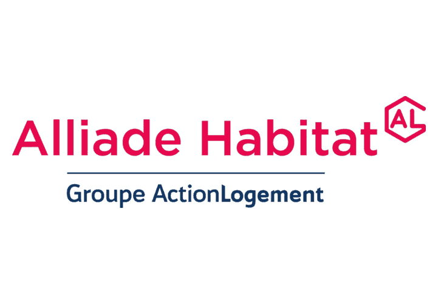

Jeter l'ancre aux Minguettes
Solidement arrimé au spectacle La Déferle, « Zone Bleue » est un projet participatif d’action artistique
et culturelle qui se déploie sur le territoire des Minguettes, à Vénissieux. La compagnie Lunée l’Ôtre fait escale au
pied de la Tour 6 de la Division Leclerc pour une résidence poétique et scénographique de plusieurs mois.
Se construire une Mai-Zone
Elle souhaite faire de cet espace une zone de stationnement temporaire, un habitat éphémère,
le lieu de la construction collective et provisoire d’une « Mai-Zone »*. Il s’agit de réaliser avec les habitant.e.s
une installation scénographique proche de ce que la « Mai-Zone » de La Déferle donne à rêver : une pièce
où se rencontrent toutes sortes d’objets saugrenus comme échoués sur une île déserte, tissant l’infinité des
liens entre chaque personne de passage sur ce vaste terrain de jeu.
En s’appuyant sur les ressorts de la fiction et l’univers de La Déferle, « Zone bleue » vient questionner
les trajectoires individuelles et collectives des habitant.e.s du quartier. Au fil d’ateliers de théâtre, d’écriture,
et de construction scénographique, les participant.e.s sont amené.e.s à rêver leur Mai-Zone. Des journées portes-ouvertes
viendront clôturer le projet en mettant en valeur les objets, photos, textes, constructions réalisées avec les
habitant.e.s. « Zone bleue » interroge nos zones de confort, les trajectoires qui se dessinent
entre intérieur et extérieur.
Construire une Mai-Zone, c’est ouvrir un espace collectif de rêverie et de jeu qui
vient questionner le sens des verbes « habiter », « occuper », qui vient interroger le vivre-ensemble pour mieux le
réinventer.
* Mai-Zone, nom féminin appartenant à la toponymie de La Déferle :
Vaste baraque bossue composée de trois étages – Fondations, Mitan,
Soupente – où les personnages évoluent au milieu des atlas périmés
et des fuites à répétitions. Lieu principal de l’action de la pièce.
Merci à tous les partenaires de notre escale “Zone Bleue” !
 
